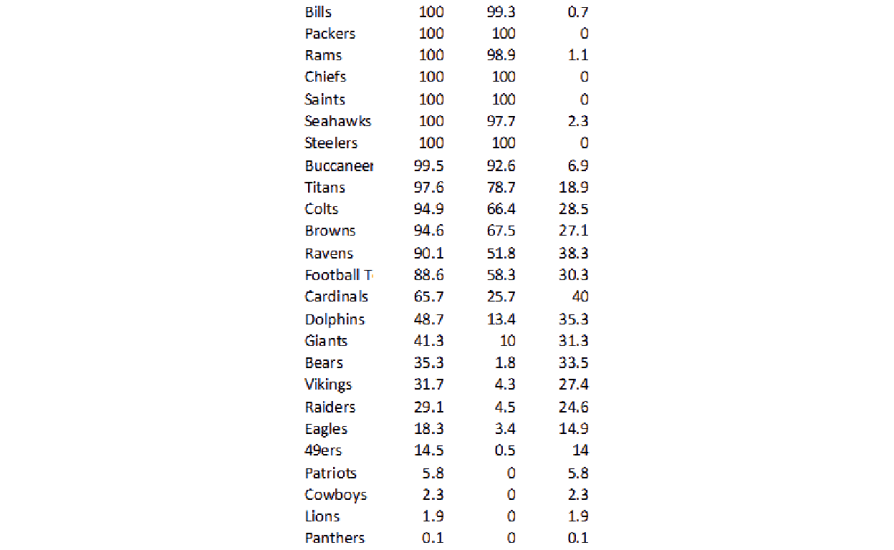
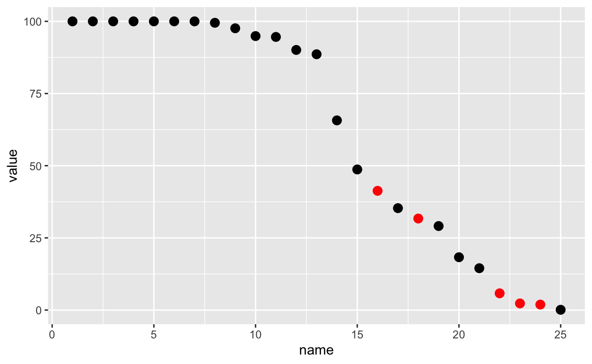

ImageMagick
ImageMagick is a robust and comprehensive open-source image processing library, and per the official docs:
Use ImageMagick® to create, edit, compose, or convert bitmap images. It can read and write images in a variety of formats (over 200) including PNG, JPEG, GIF, HEIC, TIFF, DPX, EXR, WebP, Postscript, PDF, and SVG. ImageMagick can resize, flip, mirror, rotate, distort, shear and transform images, adjust image colors, apply various special effects, or draw text, lines, polygons, ellipses and Bézier curves.
While you can use it from various APIs, tools or CLIs, one of the easiest ways for R users to get started is with the R wrapper by ROpenSci’s Jeroen Ooms called magick. This package provides a large set of pipe-friendly functions allowing for interactive editing and testing.
I’ve written briefly about magick before, specifically in using it to add logos to final ggplot2 images, but today will be a different use-case, namely using magick to read data embedded in images.
Another note is that while the docs for ImageMagick proper and the magick R wrapper are very good, ImageMagick is an entire piece of software. This means that there is an amazing breadth of applications, knowledge, and tricks to apply. I think of it a lot like regex, where it’s very useful but for many applications we only scratch the surface. For a nice “cookbook” for using ImageMagick, check out this resource. It’s a “legacy” guide, but many of the examples can be converted to magick in R or from the CLI itself.
The problem
There are many times where someone shares data as an image, whether intentionally due to software constraints (ie Twitter) or as a result of not understanding the implications (image inside a PDF or in a Word Doc). xkcd.com jokingly refers to this as .norm or as the Normal File Format. While it’s far from ideal or a real file format, it’s all too common to see data as images in the “wild”. I’ll be using some examples from Twitter images and extracting the raw data from these. There are multiple levels of difficulty, namely that screenshots on Twitter are not uniform, often of relatively low quality (ie DPI), and contain additional “decoration” like colors or grid-lines. We’ll do our best to make it work!
Example one is from Seth Walder, who was kind enough to share the raw data for ESPN’s “Sacks created” stat. Given that it was a quality image, and there were 3 of them, I wanted to try OCR (optical character recognition)!
OK here's the top 46 players – everyone with at least 5.5 sacks created.
— Seth Walder (@SethWalder) January 14, 2021
Sacks created is an ESPN stat using NFL Next Gen Stats data. pic.twitter.com/cNL23Dna9h
Excel Screenshot
So let’s get after it! We’ll need two packages, but I’ll also load tidyverse for the eventual analysis/plotting as well. Also, note that I adapted this from a StackOverflow post talking about extracting tables from images.
Now, while interactively you can just “print” the magick object and it will show up in the viewer pane, for this blog-post I’ll need to explicitly “show” it. I’ll call magick::image_ggplot(<img object>) to print it throughout the post.
image_ggplot(raw_img)

This looks like a relatively clean image, the only major problems being that it’s relatively low-DPI, it has some symbols (team logos), and it has alternating colors along with gridlines (which can mess with the OCR). We can try a “naive” OCR as seen below.
raw_img %>%
image_crop(geometry_area(0, 0, 110, 45)) %>%
ocr()
[1] "Aaron Donald (DE - LA) 19.0,\nMyles Garrett (DE - CLE) 16.5\nTJ. Watt (OLB - PIT) 14.5\nKhalil Mack (OLB - CHI) 13.0\nJustin Houston (DE - IND) 12.0\nEmmanuel Ogbah (DE - MIA) 11.0\nCarl Lawson (DE - CIN) 10.5\nBrandon Graham (DE - PHI) 10.0\nDeMarcus Lawrence (DE - DAL) 10.0\nYannick Ngakoue (DE - BAL) 10.0,\nMontez Sweat (DE - WAS) 10.0\nCarlos’ Dunlap (DE - SEA) 9.0\nCameron Jordan (DE - NO) 9.0\nKerry Hyder (DE - SF) 9.0\nErna poner (ole -TB) 9.0\nStephon Tuitt (DE - PIT) 9.0\n"Ultimately, it does pretty well! But you can see that there are some “misses” if we look closely. Let’s make it easier on the OCR engine by cleaning up the image for higher contrast.
Remove the background and grid
We’ll first start by converting the color image to greyscale via image_quantize().
raw_img %>%
image_quantize(colorspace = "gray") %>%
image_ggplot()

We can remove the grid by converting “white” colors to transparent, and allowing for some “fuzzy” approximation of colors that are close to white or “touching”. There’s a lot more to fuzz in that it’s the “relative color distance (value between 0 and 100) to be considered similar in the filling algorithm”, but I’m not a color space expert by any means.
Below we have an example of fuzz = 0, fuzz = 20, fuzz = 40, fuzz = 60. Each increase does remove a bit of “noise”, but is also reducing the quality of the “signal”.
Code for Combo
fuzz_fun <- function(fuzz){
raw_img %>%
image_quantize(colorspace = "gray") %>%
image_transparent(color = "white", fuzz=fuzz) %>%
image_background("white") %>%
image_crop(geometry_area(0, 150,110, 45))
}
fuzz_fun(20)
combo_fuzz <- c(
fuzz_fun(0),
fuzz_fun(20),
fuzz_fun(40),
fuzz_fun(60)
) %>%
image_append(stack = TRUE)
image_ggplot(combo_fuzz)

In practical terms, we are balancing increase fuzz to remove unnecessary components (eg grid lines) while leaving the actual characters there. Increasing fuzz will remove more “noise” but will eventually start to eat away at the actual “signal” as well.
no_grid <- raw_img %>%
image_quantize(colorspace = "gray") %>%
image_transparent(color = "white", fuzz=20) %>%
image_background("white")
image_ggplot(no_grid)

So we’ve taken white and converted it to transparent, and then set the image background back to “white”.
You can also remove continuous lines with a “thinning” method. We can use image_morphology() coupled with a rectangular kernel to remove straight horizontal lines for the most part. You can read Rectangle:20x1 as finding rectangles about 20 pixels wide x 1 pixel high. We couple this with image_negate() as otherwise it will focus on the characters.
So we’ll negate > thin > negate to get back to our white background sans grid-lines. While this works pretty well, it’s not always necessary for the OCR. I did want to show it as it can be helpful in some situations.
no_grid %>%
image_negate() %>%
image_ggplot()

no_grid %>%
image_negate() %>% # negate
image_morphology(method = "Thinning", kernel = "Rectangle:20x1") %>%
image_negate() %>% # back to white
image_ggplot()

This worked pretty well! However, remember that we don’t always have to do this. We’ll also still need to crop the image to remove the team logos as they can’t be parsed as text.
Crop the image
geometry_area() is used in various functions to indicate the starting width/heights and then the offset, all in pixels.
geometry_area(width = NULL, height = NULL, x_off = 0, y_off = 0)
Note that you’re always “starting” from the top and left sides, and we’re passing the geometry_area() to image_crop to crop the image itself.
# remove the top 20 pixels
no_grid %>%
image_crop(geometry_area(0, 0,110, 45)) %>%
image_ggplot()

So this techniques can be used to cut out specific portions of an image, which is another useful technique for tricky columns. For now, let’s hope we can use ALL the data together.
no_grid_crop <- no_grid %>%
image_crop(geometry_area(0, 0,110, 45))
no_grid_crop %>%
image_ggplot()

Try OCR
We can try our first OCR now! Note that image_ocr() is just calling tesseract behind the scenes.
no_grid_crop %>%
image_ocr()
[1] "Aaron Donald (DE - LA) 19.0\nMyles Garrett (DE - CLE) 16.5\nT.J. Watt (OLB - PIT) 14.5\nKhalil Mack (OLB - CHI) 13.0\nJustin Houston (DE - IND) 12.0\nEmmanuel Ogbah (DE - MIA) 11.0\nCarl Lawson (DE - CIN) 10.5\nBrandon Graham (DE - PHI) 10.0\nDeMarcus Lawrence (DE - DAL) 10.0\nYannick Ngakoue (DE - BAL) 10.0\nMontez Sweat (DE - WAS) 10.0\nCarlos Dunlap (DE - SEA) 9.0\nCameron Jordan (DE - NO) 9.0\nKerry Hyder (DE - SF) 9.0\nShaquil Barrett (OLB - TB) 9.0\nStephon Tuitt (DE - PIT) 9.0\nRomeo Okwara (DE - DET) 9.0\n"This did a great job, but what about this raw text string we ended up with? Also note that image_ocr() is just a wrapper around tesseract::ocr().
Let’s go into tesseract proper to try some robust things out!
I’m going to focus on one numeric “column” first to keep things relatively simpler. We’ll use image_crop to grab the column of interest, then we’ll call tesseract::ocr() on it. We can provide some options to the engine, namely that we’re expecting only spaces, numbers, or a decimal. This will explicitly prevent 5 being converted to S for example. It does really well here!
num_only <- tesseract::tesseract(
options = list(tessedit_char_whitelist = c(".0123456789 "))
)
no_grid %>%
image_quantize(colorspace = 'gray') %>%
image_threshold() %>%
image_crop(geometry_area(100, 0, 600, 40)) %>%
ocr(engine = num_only)
[1] "19.0\n16.5\n14.5\n13.0\n12.0\n11.0\n10.5\n10.0\n10.0\n10.0\n10.0\n9.0\n9.0\n9.0\n9.0\n9.0\n9.0\n"But we have text, numbers, and some symbols like (.
So let’s pass those as limitations to the engine, and then we can take the raw text and turn it into a dataframe/tibble.
combo <- tesseract::tesseract(
options = list(
tessedit_char_whitelist = paste0(
c(letters, LETTERS, " ", ".0123456789 (-)"), collapse = "")
)
)
raw_text <- no_grid %>%
image_quantize(colorspace = "gray") %>%
image_transparent("white", fuzz = 22) %>%
image_background("white") %>%
image_threshold() %>%
image_crop(geometry_area(0, 0, 110, 45)) %>%
ocr(engine = combo)
Make a Tibble
raw_text
[1] "Aaron Donald (DE - LA) 19.0\nMyles Garrett (DE - CLE) 16.5\nT.J. Watt (OLB - PIT) 14.5\nKhalil Mack (OLB - CHI) 13.0\nJustin Houston (DE - IND) 12.0\nEmmanuel Ogbah (DE - MIA) 11.0\nCarl Lawson (DE - CIN) 10.5\nBrandon Graham (DE - PHI) 10.0\nDeMarcus Lawrence (DE - DAL) 10.0\nYannick Ngakoue (DE - BAL) 10.0\nMontez Sweat (DE - WAS) 10.0\nCarlos Dunlap (DE - SEA) 9.0\nCameron Jordan (DE - NO) 9.0\nKerry Hyder (DE - SF) 9.0\nShaquil Barrett (OLB - TB) 9.0\nStephon Tuitt (DE - PIT) 9.0\nRomeo Okwara (DE - DET) 9.0\n"This looks pretty much perfect! We just now need to get it into a dataframe. We can accomplish this by splitting on each new row (\n) and then adding that as a column in a tibble.
raw_tibble <- raw_text %>%
str_split(pattern = "\n") %>%
unlist() %>%
tibble(data = .)
raw_tibble
# A tibble: 18 x 1
data
<chr>
1 "Aaron Donald (DE - LA) 19.0"
2 "Myles Garrett (DE - CLE) 16.5"
3 "T.J. Watt (OLB - PIT) 14.5"
4 "Khalil Mack (OLB - CHI) 13.0"
5 "Justin Houston (DE - IND) 12.0"
6 "Emmanuel Ogbah (DE - MIA) 11.0"
7 "Carl Lawson (DE - CIN) 10.5"
8 "Brandon Graham (DE - PHI) 10.0"
9 "DeMarcus Lawrence (DE - DAL) 10.0"
10 "Yannick Ngakoue (DE - BAL) 10.0"
11 "Montez Sweat (DE - WAS) 10.0"
12 "Carlos Dunlap (DE - SEA) 9.0"
13 "Cameron Jordan (DE - NO) 9.0"
14 "Kerry Hyder (DE - SF) 9.0"
15 "Shaquil Barrett (OLB - TB) 9.0"
16 "Stephon Tuitt (DE - PIT) 9.0"
17 "Romeo Okwara (DE - DET) 9.0"
18 "" Now we have essentially perfect data at this point, we just need to separate out our columns and drop the row without any data.
Tidy the Tibble
We’ll first drop any rows where the character string is < 2. We can then use tidyr::separate() to separate one column into 4 new columns as player, position, team, and sacks. There are multiple separators, which for the example seen T.J. Watt (OLB - PIT) 14.5 are:
T.J.Wattthen(represented as “\\(”
OLBthen-represented as “-”
PITthen)represented as “\\)”
- which leaves us with
14.5at the end
We have to “escape” the parentheses with \\ so that regex can understand them. The | inside the sep arguments tell the regex to separate at a match of a white-space + parentheses OR white-space + dash OR parentheses + white-space.
As our last step, we’ll convert sacks to a double column, and then BOOM!
raw_tibble %>%
filter(str_length(data) >= 2) %>%
separate(
data,
into = c("player", "position", "team", "sacks"),
sep = c(" \\(| - |\\) ")
) %>%
mutate(sacks = as.double(sacks))
# A tibble: 17 x 4
player position team sacks
<chr> <chr> <chr> <dbl>
1 Aaron Donald DE LA 19
2 Myles Garrett DE CLE 16.5
3 T.J. Watt OLB PIT 14.5
4 Khalil Mack OLB CHI 13
5 Justin Houston DE IND 12
6 Emmanuel Ogbah DE MIA 11
7 Carl Lawson DE CIN 10.5
8 Brandon Graham DE PHI 10
9 DeMarcus Lawrence DE DAL 10
10 Yannick Ngakoue DE BAL 10
11 Montez Sweat DE WAS 10
12 Carlos Dunlap DE SEA 9
13 Cameron Jordan DE NO 9
14 Kerry Hyder DE SF 9
15 Shaquil Barrett OLB TB 9
16 Stephon Tuitt DE PIT 9
17 Romeo Okwara DE DET 9 Write it as a Function
We can wrap this process into a reusable function, and then call it on our 3 images of interest!
scrape_fun <- function(url_in, crop_left, crop_top){
raw_img <- image_read(url_in) %>%
image_quantize(colorspace = 'gray') %>%
image_transparent("white", fuzz=22) %>%
image_background("white") %>%
image_threshold() %>%
image_crop(geometry_area(0, 0, crop_left, crop_top))
image_ocr(raw_img) %>%
str_c() %>%
str_split(pattern = "\n") %>%
unlist() %>%
tibble(data = .) %>%
filter(str_length(data) >= 2) %>%
separate(
data,
into = c("player", "position", "team", "sacks"),
sep = c(" \\(| - |\\) ")
) %>%
mutate(sacks = as.double(sacks)) %>%
mutate(sacks = if_else(sacks >= 20, sacks/10, sacks))
}
We can then call our new function! You may notice that I added a mutate above which protects against missing decimal places. Trey Hendrickson’s decimal place is apparently hard for the parser to “capture”.
# output to tibble
cr_sacks <- tibble(
url_in = c(
"https://pbs.twimg.com/media/ErtmQ1PXYAEUQoY?format=jpg&name=900x900",
"https://pbs.twimg.com/media/ErtmSLlXMAAvylA?format=jpg&name=900x900",
"https://pbs.twimg.com/media/ErtmTUGW8AEZ6Cy?format=jpg&name=900x900"
),
crop_left = c(110, 95, 95),
crop_top = c(45, 5, 5)
) %>%
pmap_df(scrape_fun)
cr_sacks
# A tibble: 46 x 4
player position team sacks
<chr> <chr> <chr> <dbl>
1 Aaron Donald DE LA 19
2 Myles Garrett DE CLE 16.5
3 T.J. Watt OLB PIT 14.5
4 Khalil Mack OLB CHI 13
5 Justin Houston DE IND 12
6 Emmanuel Ogbah DE MIA 11
7 Carl Lawson DE CIN 10.5
8 Brandon Graham DE PHI 10
9 DeMarcus Lawrence DE DAL 10
10 Yannick Ngakoue DE BAL 10
# … with 36 more rowsWe can plot it just to be safe, and to see if everything “checks out”! We get a range we expected, and see that T.J. Watt and Aaron Donald create many more of their own sacks relative to their positions.
cr_sacks %>%
mutate(position = if_else(position == "LB", "OLB", position)) %>%
ggplot(aes(x = sacks, y = position)) +
ggridges::geom_density_ridges(quantile_lines = TRUE, quantiles = 2) +
geom_point(
data = filter(cr_sacks, player %in% c("Aaron Donald", "T.J. Watt")),
size = 3
) +
ggridges::theme_ridges() +
theme(
axis.text = element_text(size = 10),
axis.title = element_text(size = 14),
plot.title = element_text(size = 16),
plot.caption = element_text(size = 10),
panel.grid.minor = element_blank(),
axis.title.x = element_text(hjust = 0)
) +
labs(
x = "\nCreated Sacks", y = "",
title = "T.J. Watt and A. Donald are both outliers amongst their positions",
subtitle = "Created Sacks by position",
caption = "Data: ESPN | Plot: @thomas_mock"
)

Example 2
Example two is from Brian Burke, who was kind enough to share the raw data for NFL playoff leverage for week 17 as a screenshot. At the time, I manually copied these over to a dataframe, but Ben Baldwin asked if there was a “better” way. Image OCR (optical character recognition) is a potentially more reproducible way!
Sorry, no pretty charts for now. But here are the raw numbers. pic.twitter.com/wZ3j9bXzTN
— Brian Burke (@bburkeESPN) December 17, 2020
Note that our process is almost identical to the previous example, but there are some considerations as the image is a bit more difficult to work with.
Now, this image is more problematic for two main reasons.
- The image itself is much smaller, specifically about 60% smaller than our previous example and of low quality
- The fonts in use are worse (not monospaced and have serifs), and not bold
This is going to be harder than before.
Get the raw img
burke <- "https://pbs.twimg.com/media/EpdF4fzW4AEeOvF?format=png&name=small"
raw_img <- image_read(burke)
Now, again while interactively you can just “print” the magick object and it will show up in the RStudio viewer pane, for this blog-post I’ll need to explicitly “show” it. I’ll call magick::image_ggplot(<img object>) to print it throughout the post.
image_ggplot(raw_img)

This looks like a relatively clean image, the only major problems as mentioned above are that it’s very low-quality along with not ideal fonts, and it cuts off some of the data for team.
Clean it up
We can remove the grid by converting “white” colors to transparent, and allowing for some “fuzzy” approximation of colors that are close to white or “touching”. There’s a lot more to fuzz in that it’s the “relative color distance (value between 0 and 100) to be considered similar in the filling algorithm”, but I’m not a color space expert by any means.
In practical terms, we are balancing increase fuzz to remove unnecessary components (eg grid lines) while leaving the actual characters there. Increasing fuzz will remove more “noise” but will eventually start to eat away at the actual “signal” as well.
Below we have an example of fuzz = 0, fuzz = 20, fuzz = 50, fuzz = 70.
So we’ve taken white and converted it to transparent, and then set the image background back to “white”.
no_grid <- raw_img %>%
image_transparent(color = "white", fuzz=20) %>%
image_background("white")
image_ggplot(no_grid)

You can also remove continuous lines with a “thinning” method. We can use image_morphology() coupled with a rectangular kernel to remove straight horizontal lines for the most part. You can read Rectangle:20x1 as finding rectangles about 20 pixels wide x 1 pixel high. We couple this with image_negate() as otherwise it will focus on the characters.
So we’ll negate > thin > negate to get back to our white background sans grid-lines.
no_grid %>%
image_negate() %>%
image_ggplot()

We can apply the thinning morph as seen below, flipping back and forth with image_negate().
no_grid %>%
image_negate() %>%
image_morphology(method = "Thinning", kernel = "Rectangle:20x1") %>%
image_negate() %>%
image_ggplot()

This worked pretty well! However, because of the mis-alignment of the column labels and the columns themselves, I’m just going to trim the top off.
Crop the image
geometry_area() is used in various functions to indicate the starting width/heights and then the offset, all in pixels.
geometry_area(width = NULL, height = NULL, x_off = 0, y_off = 0)
Note that you’re always “starting” from the top and left sides, and we’re passing the geometry_area() to image_crop to crop the image itself.
# remove the top 20 pixels
no_grid %>%
image_crop(geometry_area(0, 0, 0, 20)) %>%
image_ggplot()

So this techniques can be used to cut out specific portions of an image, which is another useful technique for tricky columns. For now, let’s hope we can use ALL the data together.
no_grid_crop <- no_grid %>%
image_crop(geometry_area(0, 0, 0, 20))
no_grid_crop %>%
image_ggplot()

Try OCR
We can try our first OCR now! Note that image_ocr() is just calling tesseract behind the scenes.
no_grid_crop %>%
image_ocr()
[1] "Bills 100 99.3 07\nPackers 100 100 0\nRams 100989 11\nChiefs 100 100 0\nsaints 100 100 0\nSeahawks 100 (97.7 23\nSteelers 100 100 0\nBuccaneer 99.5 92.6 69\nTitans 97.6 787 18.9\nColts 94.9 6640285\nBrowns 946 0 «675 TA\nRavens 90.1 S18 383\nFootballT 88.6 583 303\nCardinals 65.7. 25.7 40\nDolphins 48.7 14 353\nGiants 413 10-313\nBears 35.3 18 (335\nVikings 317 430 278\nRaiders 29.1 45 246\nEagles 18.3 3400 149\n49ers 14.5 os 14\nPatriots 58 0 58\nCowboys 23 0 23\nLions 19 0 19\nPanthers O41 oO O41\n"This did a decent job, but I can already see some “problems”.
The Rams row is “squished” together, the Browns have some letters instead of numbers, and the Ravens have a “S” instead of a 5.
Let’s go into tesseract proper to try some robust things out!
I’m going to focus on one “column” first to keep things relatively simpler. We’ll use image_crop to grab the column of interest, then we’ll call tesseract::ocr() on it. We can provide some options to the engine, namely that we’re expecting only spaces, numbers, or a decimal. This will explicitly prevent 5 being converted to S for example.
num_only <- tesseract::tesseract(
options = list(tessedit_char_whitelist = c(".0123456789 "))
)
no_grid %>%
image_quantize(colorspace = 'gray') %>%
image_threshold() %>%
image_crop(geometry_area(80, 0, 80, 20)) %>%
ocr(engine = num_only)
[1] "100\n100\n100\n100\n100\n100\n100\n99.5\n97.6\n94.9\n94.6\n90.1\n28.6\n657\n48.7\n41.3\n35.3\n317\n29.1\n18.3\n14.5\n5.8\n2.3\n1.9\n01\n"I’m going to “plot” the data to show some areas where mistakes were still made. We know that 100 is the max, and that the values are ranked, and thus should be always decreasing. We have at least 5 examples where the data is missing a period which causes it to be scaled improperly (10x larger than reality).
ocr_col1 <- no_grid %>%
image_crop(geometry_area(80, 0, 80, 20)) %>%
ocr(engine = num_only) %>%
str_split(pattern = "\n") %>%
unlist() %>%
enframe() %>%
mutate(value = as.double(value)) %>%
filter(!is.na(value))
ocr_col1 %>%
mutate(color = case_when(
value > 100 ~ "red",
value > lag(value) ~ "red",
value > lag(value, n = 3) ~ "red",
TRUE ~ "black"
)) %>%
ggplot(aes(x = name, y = value, color = color)) +
geom_point(size = 3) +
scale_color_identity()

Again, due to the VERY low image quality (the original image is 72 DPI and only ~500 pixels high) we’re basically stuck with some of these manual steps. Regardless, we’ve got “better” data now that we’ve added our conversion logic. Those same 5 points now fall “accurately” into the appropriate range.
ocr_col1 %>%
mutate(color = case_when(
value > 100 ~ "red",
value > lag(value) ~ "red",
value > lag(value, n = 3) ~ "red",
TRUE ~ "black"
)) %>%
mutate(
value = if_else(value > 100, value/10, value),
value = if_else(name >= 22, value/10, value)
) %>%
ggplot(aes(x = name, y = value, color = color)) +
geom_point(size = 3) +
scale_color_identity()

So we’ve apparently “fixed” this column!
Create a function
We’ll create a function so that we can split out each column, apply optimal characters or numeric to each and then recombine.
img_ocr_fun <- function(trim_width, trim_start, char_num = TRUE) {
num_only <- tesseract::tesseract(
options = list(tessedit_char_whitelist = c(".0123456789 "))
)
combo <- tesseract::tesseract(
options = list(
tessedit_char_whitelist = paste0(
c(letters, LETTERS, " ", ".0123456789 "), collapse = "")
)
)
input_char <- if (isTRUE(char_num)) {
num_only
} else {
combo
}
no_grid %>%
image_crop(geometry_area(trim_width, 0, trim_start, 20)) %>%
ocr(engine = input_char) %>%
str_split(pattern = "\n") %>%
unlist() %>%
enframe() %>%
select(-name) %>%
filter(!is.na(value), str_length(value) > 0)
}
We can “find” the columns by cropping specific areas. Note that I’ve “recombined” all of them with image_append() so that you can see that each section together completes the table.
c(
no_grid %>%
image_crop(geometry_area(80, 0, 0, 20)),
no_grid %>%
image_crop(geometry_area(50, 0, 80, 20)),
no_grid %>%
image_crop(geometry_area(50, 0, 140, 20)),
no_grid %>%
image_crop(geometry_area(50, 0, 210, 20))
) %>%
image_append() %>%
image_ggplot()

Apply the function
We can use purrr::pmap() to apply the functions with each of our parameters, and then use bind_cols to create our actual dataset.
all_ocr <- list(trim_width = c(80, 50, 50, 50),
trim_start = c(0, 80, 140, 210),
char_num = c(FALSE, TRUE, FALSE, TRUE)) %>%
pmap(img_ocr_fun)
data_df <- all_ocr %>%
bind_cols() %>%
set_names(nm = "team", "win", "lose", "leverage")
data_df
# A tibble: 25 x 4
team win lose leverage
<chr> <chr> <chr> <chr>
1 Bills 100 99.3 07
2 Packers 100 100 0
3 Rams 100 98.9 11
4 Chiefs 100 100 0
5 Saints 100 100 0
6 Seahawks 100 977 23
7 Steelers 100 100 0
8 Buccaneer 99.5 92.6 69
9 Titans 97.6 18.7 18.9
10 Colts 94.9 66.4 285
# … with 15 more rowsClean it up
We can convert some of the letters to their proper numeric. I intentionally used characters vs numeric on some columns as it “guesses” better in our really low quality image. I then add some logic to convert our numbers if decimal places are missing, and it gets VERY close, but is not perfect.
data_df %>%
mutate(across(win:leverage, ~str_replace(tolower(.x), "s", "5"))) %>%
mutate(across(win:leverage, ~str_replace(tolower(.x), "o|a", "0"))) %>%
mutate(across(win:leverage, as.double)) %>%
mutate(across(win:leverage, ~if_else(.x > 100, .x/10, .x))) %>%
mutate(lose = if_else(lose > win, lose/10, lose)) %>%
mutate(leverage = win - lose) %>%
print(n = 25)
# A tibble: 25 x 4
team win lose leverage
<chr> <dbl> <dbl> <dbl>
1 Bills 100 99.3 0.7
2 Packers 100 100 0
3 Rams 100 98.9 1.10
4 Chiefs 100 100 0
5 Saints 100 100 0
6 Seahawks 100 97.7 2.30
7 Steelers 100 100 0
8 Buccaneer 99.5 92.6 6.9
9 Titans 97.6 18.7 78.9
10 Colts 94.9 66.4 28.5
11 Browns 94.6 67.5 27.1
12 Ravens 90.1 51.8 38.3
13 Football T 88.6 38.3 50.3
14 Cardinals 65.7 28.7 37
15 Dolphins 48.7 13.4 35.3
16 Giants 41.3 10 31.3
17 Bears 35.3 18 17.3
18 Vikings 31.7 4.3 27.4
19 Raiders 29.1 4.5 24.6
20 Eagles 18.3 3.4 14.9
21 49ers 14.5 5 9.5
22 Patriots 58 0 58
23 Cowboys 23 0 23
24 ions 19 0 19
25 Panthers 1 0 1 It looks really good, and it really only messed up a few rows, which we could fix manually, but you can see that while these techniques are robust you are still at the mercy of image quality!